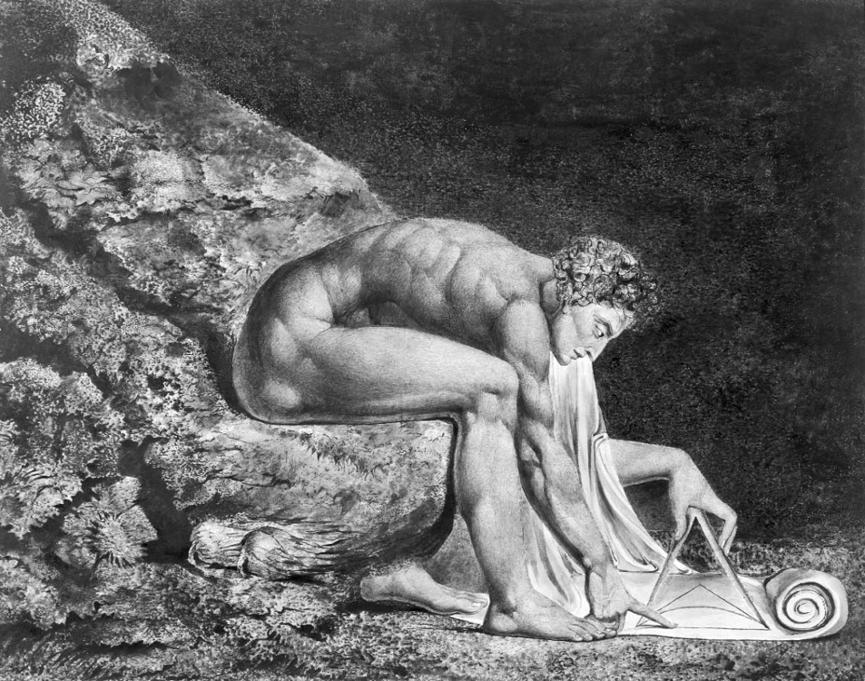

Teoride ve pratikte akıl
“Ne şaheser bir yapıttır insan soylu aklı, sonsuz yetileriyle. Biçimi biçim, ustalığı usta, eyleminde bir melek, kavrayışı bir tanrı gibi!” Hamlet’in aklı insanın özel bir yetisi olarak yüceltmesi ve kavrayış gücünü neredeyse tanrıya eş tutması filozofların da onayladığı bir tutumdur.
Platon’dan ve Aristoteles’ten bu yana akıl insanlığın en görkemli yetisi olarak görülmüştür. Aklın insanı “daha aşağı” hayvanlardan ayırdığına, hatta onun Tanrı’nın insana özel bir armağanı olduğuna inanılmıştır.
Gölgeler
Akıl iki kategoride değerlendirilir: Teorik ve pratik akıl. Teorik aklı inançlarımızı ve eylemlerimizi dünyaya ayarlamak için kullanırız. Onun işi dünyadaki şeylerin durumunu bilmektir. Pratik aklın işi ise eylemleri seçmektir: Bu idrakin, ilgilerimizin veya arzularımızın ışığında ne yapacağımızı belirlemektir. Teorik aklı seyrüsefercinin arazinin durumunu gösteren ama nereye gidileceğini söylemeyen haritasına benzetebiliriz. Bir yön yerine diğerini seçmek ilgimize ve arzumuza bağlıdır.
Kimi şüpheciler teorik aklın inanıldığı kadar iyi olup olmadığını sorgularlar. Görünürde güçlü olan bir akıl yürütme istenmeyen sonuçlara yol açtığında, aklın yüksek reytingi düşmeye başlar. Bu nedenle, akla karşıt ve aklın ötesinde görünen şeylere inanan dindar “bahaneciler” aklın tamamıyla güvenilir bir yeti olduğunu reddederler. Onlara göre akla uygun olmayan birtakım şeylere iman etmek bir erdem bile olabilir. Akıl yürütme gücümüz üzerine düşünen David Hume gibi bazıları da doğruyu yanlıştan ayırma, ya da şeylerin mahiyetini kavrama gücümüze yönelik umutsuz ve karamsar bir resim çizerler.
Şüphecilerin bir kısmı da pratik aklın tam olarak ne olduğu konusunu sorgulamışlardır. Akılsal davranışın duygusal davranışın karşıtı olduğuna inanılır. Ama şimdilerde karar verirken bazı çıktılara olumlu bazılarına olumsuz yükler bağlayan duygu veya “duygulanım” mekanizmalarının da etkili olduğu kabul ediliyor. Duyguların bu gücünden hareketle kimileri kararlarımızın seyrini sadece duyguların ve arzuların, ya da “tutkuların” belirlediğini öne sürüyor.

NEWTON (1795) - William Blake (1757-1827)
KENDİ KENDİME NASIL YALAN SÖYLEYEBİLİRİM?
A Priori ve A Posteriori
Gelenek teorik akıl yürütmeyi “a priori” ve “a posteriori” olarak ikiye ayırır. Eğer önermenin anlamı anlaşıldığında çıkarımın geçerli olduğu görülüyorsa, bu çıkarıma “a priori çıkarım” denir. Örneğin, “eğer odada üç kişi varsa, o zaman odada ikiden fazla kişi vardır” çıkarımı a priori’dir. Bu koşullu önermeyi anlayan herkes onu onaylayacaktır ve bunun için önermenin anlamından başka bir şeye başvurmaya gerek yoktur. A priori çıkarımın temel örnekleri mantık ve matematikte bulunur. Odada üç kişi olmasından odada ikiden fazla kişinin olduğu çıkarımı basit ama sağlam bir matematiksel çıkarımdır. Öte yandan, eğer arkadaşım ya Çin’de ya Hindistan’da ise, ve ben onun Çin’de olmadığını öğrendiysem, mantık kuralları benim onun Hindistan’da olduğunu çıkarmamı sağlar. Buna karşılık eğer bir çıkarım dünyanın durumuna bağlıysa ona “a posteriori çıkarım” denir. Geçmişte birileri Londra’dan New Yok’a gittiyse, gemiyle gitmiştir; ama daha yakın zaman için bu güvenilmez bir çıkarımdır, çünkü şimdi bu yolu hava yoluyla gitme ihtimalleri daha yüksektir. A posteriori çıkarımlar dünyanın durumu hakkında bildiklerimiz veya inandıklarımızla ilgilidir. Bu da hem ilke hem pratik olarak değişebilir bir şeydir.
A priori çıkarım kategorisi felsefede rahatsız edici bir yere sahiptir. Birçok şeyi duyularımızı kullanarak, kendimizi şeylerin nasıl olduğu hakkında bilgi alabilecek bir konuma yerleştirerek keşfederiz. Peki deneyimden hiç yardım almadan sağlam olduğunu bildiğimiz bir çıkarım kümesi nasıl olur da var olabilir? Belki de biz bu çıkarımları yapmaya “programlanmışızdır” ve bu anlamda temel matematik ve mantık kavrayışı bizde doğuştandır. Ama bu eğilim bizde doğuştan olsa bile, bu onun güvenilir olduğu anlamına gelmez. Hata yapabilecek şekilde “programlanmış” olamaz mıyız? Bu konuyla ilgili başka bir öneriye göre, mesele aslında basittir. Bu çıkarımlar aslında kendi oluşturduğumuz “uylaşımların” veya dil kurallarının sonucudur. Üç şeyin olmasından ikiden fazla şeyin olduğunu çıkarsamamıza şaşıran bir filozofa, “bu matematik dilinin çalışma biçimidir” karşılığını verebiliriz. Nihayetinde bugünün Pazartesi olmasından hareketle yarının Salı olacağının çıkarsanmasında hiçbir gizem yoktur. Bu haftanın günlerini bu şekilde isimlendirmemizin sonucudur. Matematiğin niçin bu kadar iyi çalıştığını anlamak ilginç olabilirdi, ama onun kurallarının olduğu gibi olması, tıpkı haftanın günlerinde veya satrançta şahın “şah çekilen parça” olmasında olduğu gibi bize bağlıdır.
A priori konusunda bu uylaşımcılığın taraftarları varsa da, o pek de gerçekçi bir konum gibi görünmüyor. A priori’nin ilgi çekmesinin nedeni “değişmezlik özelliğine” sahip olmasıdır. Onu ifade ettiğimiz dili değiştirebiliriz veya onu göz ardı edebiliriz, ama ne yaparsak yapalım, yedi artı beş hâlâ on iki edecektir. Uylaşımlar ve oyun kuralları bizim denetimimizde olduğundan onları değiştirebiliriz, oysa matematik ve mantık granit gibidir. Dahası, daha önce a priori geçerli olduğuna inanılan bir görüşle ilgili kuşkuların oluşması büyük bir depremin habercisidir. Eukleides geometrisinin olumsal olduğu görünmeye başladığı, yani artık düzlemdeki üçgenlerin açılarının iki dik açının toplamına eşit olduğunu oturduğumuz yerden söyleyemediğimiz zaman matematikte büyük bir altüst oluş yaşandı. Einstein’ın A’nın doğru olarak iki olayın eşzamanlı olduğuna hükmetmesinden, onların eşzamanlı olmadığı hükmünde bulunan B’nin yanlış olması gerektiğinin çıkarsanamayacağını söylediği an fizikte bir devrim yaşandı. Bu devrimler “sadece” dilin bir kuralının ya da uylaşımının değiştirilmesinden daha fazla bir şeyin devrede olduğunu gösterir.
Aslında bu olaylar farklı bir düşünce çizgisi izlemememiz gerektiğine işaret eder: A priori çıkarım kategorimiz güvenilir değildir; biz çıkarımlar konusunda katı ve çabuk ayrımlar yapmaktan çok bunları derecelendiriyoruz; daha “merkez”de olduğunu kabul ettiklerimize daha çok bağlanıyoruz. Bu görüşe göre, a priori dediğimiz önermeler ve çıkarımlar vazgeçmekte en isteksiz olduklarımızdır. Bunlara karşı çıkmak gerçekten bilimsel bir dehayı gerektirir. A priori Tanrı’nın armağanı olan bir kategori olmaktan ziyade en çok bağlı olduğumuz, ya da en azından düşünce tarihinde belli bir zaman ve mekânda en çok bağlı olduğumuz şeylere dair bir kategoridir. Olağan mantık veya matematik çerçevesinin dışında düşünmek zordur, ama bir zamanlar Eukleides geometrisi veya göreli olmayan uzay-zaman çerçevesi dışında da düşünmek zordu. Ama düşünmemizin zor olduğu şeyin doğru olmasının mümkün olmadığını söylemek kendimizi “pohpohlamak” olur. “Apaçık”, “kendiliğinden açık” ya da “bariz” olduğunu düşündüğümüz şeyler aslında zihnimizin öğretimle ve tekrarla belli bir şekilde eğitilmiş olmasının sonucu olarak belli bir zamanda bize “apaçık” görünen şeyler olabilir.
Tahminler
A posteriori akıl yürütmeye dönersek bu alanda her şey daha kırılgan ve eğretidir. Burada temel sorun uzay-zamanın dar bir alanıyla sınırlı olan dağınık ve düzensiz deneyimin her nasılsa bize şeylerin durumu hakkında daha geniş, daha genel, hatta sınırsız doğrular sağlayabildiğine olan güvenimizdir. Dünyanın çok küçük bir kısmını çok kısa bir süre için görüyoruz. Buna rağmen olayların doğa yasalarına, (geçmişte, şimdi ve gelecekte) değişmeyen örüntülere göre gerçekleştiğine inanıyoruz. Ekonomik tahminlerimizde, hatta hava tahminlerimizde yeterince mütevazı olabiliyoruz. Ama güneş sisteminin dönüşlerine, kütle çekiminin cisimleri etkilemeye devam edeceğine, cisimlerin iç bütünlüğe sahip olduklarına ve birdenbire dağılmayacaklarına, bugün bizi besleyen ekmeğin yarın da besleyeceğine tam bir güven duyuyoruz. Yaşamlarımızı (tıpkı hayvanlar gibi) şu anda bize düzenli görünen olayların bizden önce de aynı düzenliliği sürdürdüklerini ve gelecekte de sürdürecekleri öncülüne göre düzenliyoruz. Başka bir deyişle, doğanın tekbiçimli ve düzenli olduğunu kabul ediyoruz (bkz. Niçin Şeyler Olmaya Devam Ettikleri Gibi Olmaya Devam Ediyorlar?). Daha teorik olan bilimsel akıl yürütmeler bize şeylerin nasıl olduğuna dair modellerimizin “doğru” olduğu güvenini veriyor, ya da bize basit ve doğal gelen açıklamaların büyük olasılıkla doğru olduğunu söylüyor. İşte bu güven duygusu “makul” dediğimiz şeyi belirliyor. Ama aslında bunlar bilinmeyene doğru atılmış cesur ama “güvensiz” adımlar değil mi? Eğer öyleyse, bu onların neye inanmanın makul olacağına yönelik güvenli hükümlerini baltalamıyor mu?
Pratik Sebepler
Akılla ilgili diğer temel alan pratik akıldır. Burada kullanılan akla uygun nedenler inançla değil eylem, his, duygu ve tutumla ilgilidir. Kız kardeşini rahatsız ettiği gerçeği Brian’ın borazan çalmaya son vermesi için bir neden oluşturur. Ann’in sıkıntısı Cicely’nin ona ilgi göstermesi için bir neden oluşturur. Brian’ın anne ve babasının olaya müdahale etmesi “makul” olabilir, ama ona geceyi kömürlükte geçirme cezası vermeleri pek makul olmaz. Bu tür ifadelerle insanların belli davranışlarını, seçimlerini ve tavırlarını onayladığımızı veya onaylamadığımızı ortaya koyarız. Birbirimizin pratik durumlara verdiği tepkileri onaylar veya eleştiririz. Bunun için seçtiğimiz nedenler –ahlaki duruşumuz da dahil– pratik duruşumuzu açığa vurur.
Bu “onaylamalar ve eleştiriler” kuşku duyulamaz bir otoriteye sahip evrensel bir ortak yetinin izini taşısaydı çok iyi olurdu. Akıl veya rasyonellik bütün insanlarda doğuştan vardır. Ama ne yazık ki filozofların zorlu çalışmalarına rağmen, onun ne olduğunun belirlenmesi konusunda pek de umutlu konuşamıyoruz. Brian’a makul olmadığı eleştirisini yöneltirken gerçekten de onu eleştiriyoruz. Ama bu bir eleştiridir, daha fazlası değil; özellikle de bu onun yaptığı “yanlış” konusunda yanılmaz bir kılavuz hiç değildir. Bu örnekte Brian’ın Ann’in onun borazan çalmasından duyduğu rahatsızlığa karşı yeterince duyarlı olmadığını düşünüyoruz. Ama Brian bizim gibi düşünmüyor olabilir: Ann’in aşırı hassas olduğunu, onun sızlanmalarının anne ve babasının ilgisini çekmek için bir oyun olduğunu düşünüyor olabilir. Brian’ın bu inançlarının bir kısmı makul bir kısmı makul olmayabilir. Brian kendisini Ann’in yerine koymakta zorlanıyor olabilir, ama bu makul olmadığını değil, hayal gücünden yoksun olduğunu gösterebilir – sonuçta Brian’ın kendisi borazan sesini muhteşem bulduğu için ablasının da borazan çalan bir kardeşinin olmasından mutlu olduğunu düşünmektedir. Kısaca, Brian’ın hatası kafasında değil gönlünde olabilir. Brian kendi kendisiyle çelişen biriyle aynı çıkmazın içinde değildir ya da o, dünyanın durumuna tamamen kayıtsız biri değildir. Aslında hiç de kötü durumda bile olmayabilir. Bencilliği, duyarsızlığı veya hayal gücü yoksunluğu ona yarar bile sağlayabilir: Acı ama ticaret ve politika gibi birçok insani faaliyette talih daha çok duyarsız, dik başlı, bencil ve hayal gücünden yoksun olanları kayırmaktadır.
Bu düşünce silsilesinin ima ettiği dayanak yokluğu sorunu son derece rahatsız edicidir. İnsana özgü düşünce ve eylem biçimlerinin belirlenmiş ve bilinebilir olduğunu, eylemlerimizde hepimizin takip etmesi gereken saydam kurallar olduğunu öne süren klasik anlayışın temellerini sarsar. Bunun yerine, irade ve tercihin keyfi çatışmalarından başka bir şeyin olmadığını söyleyen bir görüşü öne çıkarır: Bir kısım insanların hissiyatına karşı farklı hissiyata sahip diğerleri onlara muhalefetlerini ve hayal kırıklıklarını ifade ederler. Bu görüşün en güçlü savunucularından olan David Hume “akıl tutkuların kölesidir ve yalnızca öyle olması gerekir; hiçbir zaman onlara hizmet etmekten ve boyun eğmekten başka görev üstlenemez,” dediğinde tüm korkuları da –nihilizm, şüphecilik, görelilik– tetikliyordu. Bunların hayaletleri Hume’dan kısa bir sonra gelen Kant’tan bugüne kadar yazarları rahatsız etmeye devam ediyor.
Kant’ın bu duruma tepkisi herhangi bir pratik fail tarafından kabul edilmesi gereken “bir eylem düsturu” ya da küçük bir düsturlar öbeği olduğunu göstermeye çalışmaktı. Düstur, “Sana nasıl davranılmasını istiyorsan sen de başkalarına öyle davran” gibi bir eylem ilkesidir. Amaç böyle bir ilkeyi ihmal etmenin fail olma fikrinin esasına dair bir şeyi kaybetmek olduğunu göstermektir. Kant’ın kendi önerisi şudur: “Sadece aynı zamanda evrensel bir yasa olmasını isteyebileceğin düstura göre hareket et.” Başkalarının ona göre hareket edemeyeceği bir ilkeye göre hareket etmek “saf pratik akla” aykırı olacaktır. Başkaları için geçerli saydığımız bir ilkeden kendimizi muaf tutmanın iticiliği düşünüldüğünde, bu ilkenin hoşluğu hemen kendini gösterir. Devletin herkesten vergi toplaması gerektiğini söylemek ama kendini bu görevden muaf tutmaya çalışmak, ya da insanların çoğu zaman doğru sözlü olmasından memnun olmak ama iş kendine gelince fırsatını buldukça onları kandırmaktan çekinmemek hiç de tasvip edilecek şeyler değildir. Kant en azından genel olarak birbirimizden ya da iyi bir vatandaştan beklenilen şeylere parmak basmıştır.
Yine de insanda bu “iyi” düşüncelerin statüsü hakkında bazı kuşkular uyanıyor. Onlar gerçekten akıl tarafından mı onaylanıyor, yoksa sadece iyi vatandaşlardan beklediğimiz, ya da istediğimiz yaşam biçiminin gelişmesi için gerekli olduğunu bildiğimiz şeylerle ilgili kaygıları mı temsil ediyorlar? Kant’ın örneklerinden belki de en sağlamı “yalan yere söz verme” örneğidir. Sözümü tutmayacağımı bilerek size bir şey yapmak için söz verdiğimde, herkesin de benim gibi davranmasını isteyemeyeceğim bir şekilde hareket etmiş olmuyor muyum? Eğer onlar da öyle davranırsa “söz alma ve vermenin” tüm anlamı kaybolur. Her söz verme eylemi “eğer canım isterse tutarım” koşuluna bağlanırsa hiçbir söz güvenilir olmaz ve sonuçta söz verme ediminin hiçbir anlamı kalmaz. Ben bunun bütün toplumsal bağların çözülmesine, yani büyük bir felakete yol açacağını düşünebilirim. Ama bu durumu bile benden farklı yorumlayanlar olabilir. Onlar toplumsal bağlardan tamamen kurtulmuş özgür insanların oluşturduğu bir tür altın çağ ya da bağlayıcı yasaların ve iyi davranma taahhütlerinin hiçbir anlam ifade etmediği İzlanda efsanelerinde tasvir edilene benzeyen kendine yeterli bir yaşam hayal edebilirler. Bu hayali durumu idealize edecek kadar “akli olmayanlar” olabilir, ama bu tam da benim bu düşünceden korkmamın ya da bu düşünceden rahatsız olmamın tescilidir: Başka bir deyişle, o saf akla dayalı bir hüküm olmaktan ziyade olumsal, duygusal bir hoşnutsuzluğun ürünüdür.
Bir de insanların rahatlıkla herkesin uymayacağı, ama yine de “akıldışı”, hatta olağandışı bile olmayan davranışlarda bulunduğu durumlar vardır. Benim gözde örneğim normalde akla uygun bir davranış olarak görülen ama herkesin uymadığı aylık kredi kartı ödemeleridir. Eğer herkes buna uysaydı kredi kartını veren banka hiç kâr edemez ve iflas ederdi.
Temel Sabitler
Hume’un kendisi nihilizm, şüphecilik veya göreciliğin tehditlerinden hiç de rahatsız değildi. O akıldan ziyade insan doğasının temel sabitlerine bel bağlıyordu. Acı, hastalık, yetersizlik, yoksulluk, özgürlük ve saygı yoksunluğu gibi ıstırap verici olağan nedenlerden hoşnutsuzluk duymanın doğal olduğunu düşünüyordu. Yine sahip olana veya onunla etkileşimde bulunanlara “yararlı” olan –sosyal, neşeli, nazik, zeki, becerikli ve her şeyden önemlisi hayırsever olma gibi– özelliklerin takdir edilmesi de doğaldı. Bu doğal eğilimler karakterlerimizin az çok kabul edilebilir bir şekilde biçimlenmesini sağlayan güçleri doğuruyordu. Bu güçler kimden hoşlanmamız kimi takdir etmemiz gerektiğini gösteriyordu. Adam Smith’in söylediğine göre, başkalarının eleştirilerine karşı kendimizi savunacak bir şeyimiz olmadığında kendi davranışlarımızdan rahatsızlık duyuyor ve bu sesleri “içselleştiriyorduk.” Bütün insanların tamamen aynı etik üzerinde birleşeceğinin garantisi yoktur, zira beğenilerimiz, durumlarımız ve gereksinmelerimiz farklıdır. Ama “insanlık cemiyetinin” takdirle karşılayacağı iyi bir davranışın mahiyetinin ya da zekâlarıyla ve hayırseverlikleriyle hayranlık timsali olanların genel özelliklerinin ne olduğu konusunda anlaşma olasılığımız büyüktür.
Peki, akıl yetisinin iyi davranma meselesiyle hiç mi ilgisi yoktur? Elbette içinde eylemde bulunacağımız durum hakkında doğru kanıya sahip olmak iyi davranmak için elzemdir. Bu da durumun ampirik olarak kavranması anlamında aklı iyi eylemin önemli bir parçası yapar. Ayrıca bir şeyin üzerine düşünme anlamında aldığımızda akıl ince ayrımlar yapmamızı, böylece takdiri hak eden davranışları görünüşte ona benzese de uygunsuz olan davranışlardan ayırt etmemizi sağlar. Durum üzerine düşünmeden ve gerekçelendirilmiş olduğunu düşündüğümüz genel ilkeler olmadan iyi edimde bulunamayız.
Bu kısa açıklamaya bakınca neye inanmamız gerektiği hakkındaki pratik aklın ve akıl yürütmenin oldukça düzgün işlediğine dair bir izlenim edinebilirsiniz. Ama pratikte durum bundan çok uzaktır. Politik konseylerde mevcut durumun tespit edilmesinde biliminsanlarının ve başka otoritelerin görüşlerine başvurulur ama ne yapılması gerektiğine ilişkin ilkelere pek rağbet edilmez. Başkalarının mülkiyet hakkına saygı göstermesi gerektiği söylendiğinde “Kim takar başkasını?” diyenler sadece isyankâr yeniyetmeler değildir. “Hayat adamları” ve “işadamları” da daha iyi durumda değildir. Başkalarına ne yapmaları gerektiğini söylerken tutucu ve otoriter bir çehre takınsalar da kendilerinin yaptıklarının uygunluğuyla ilgili sorularla karşılaştıklarında ilkelerden hemen şüpheye düşerler. Sadece ahlaki ihlallerde değil mantıksal ihlallerde bile durum budur. Kamu sağlığı ve ilaç politikası komitesi, (a) ilaç politikası halk sağlığını korumayı amaçlamalıdır; (b) alkol insanların sağlığına esrardan daha zararlıdır (c) esrarın yasadışı ama alkolün yasal olması uygundur, derken zerre kadar utanmamaktadır. ABD’de, İngiltere’de ve birçok ülkede durum budur. Bundan tek sızlananlar filozoflar ve elbette bu yasalar altında ezilenlerdir.